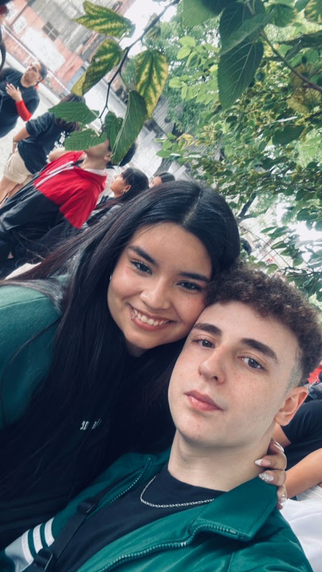
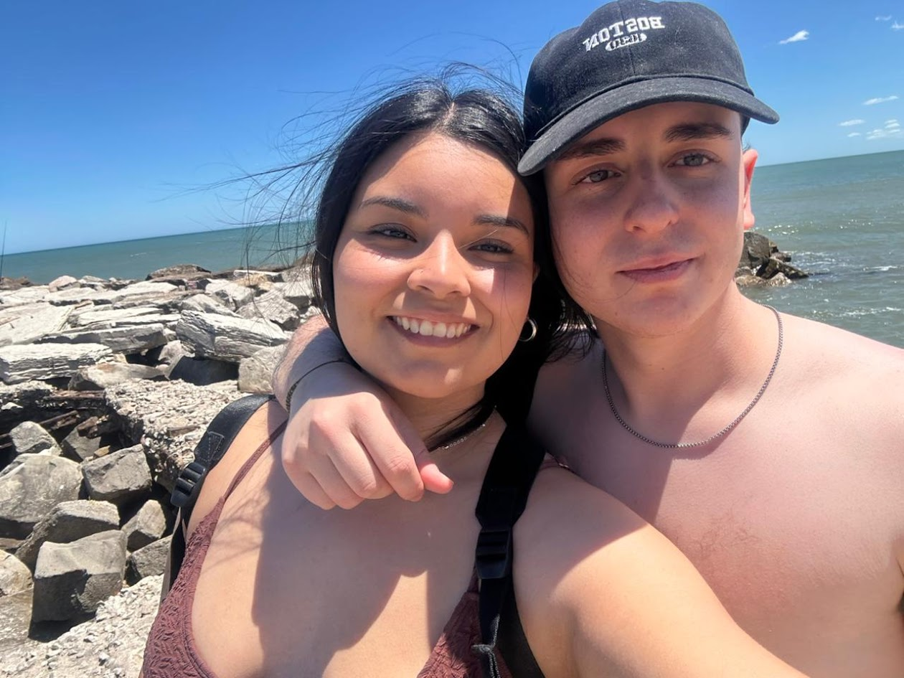
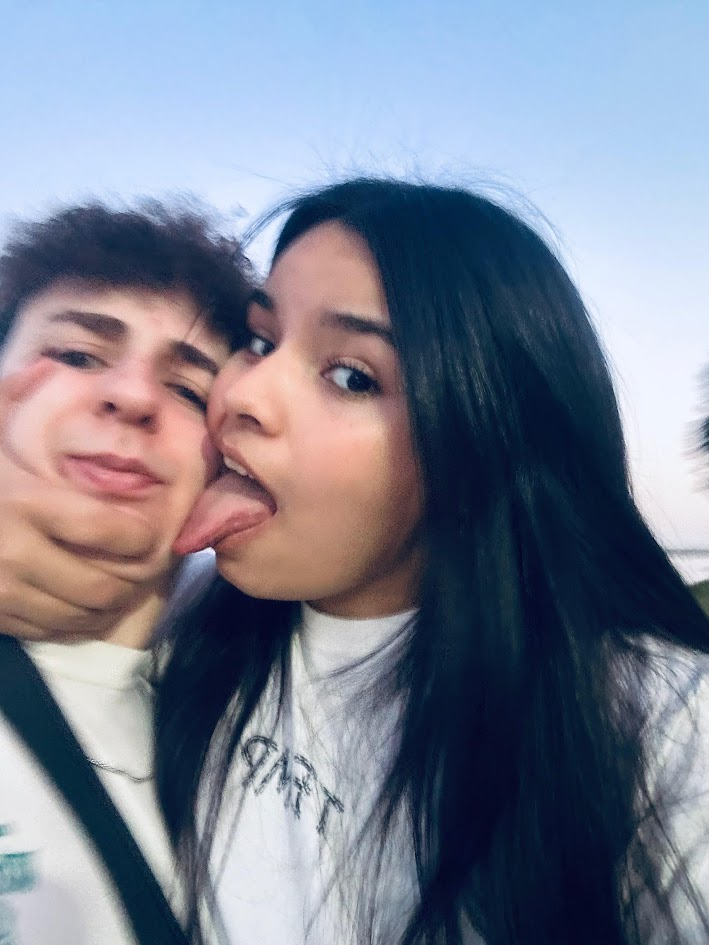
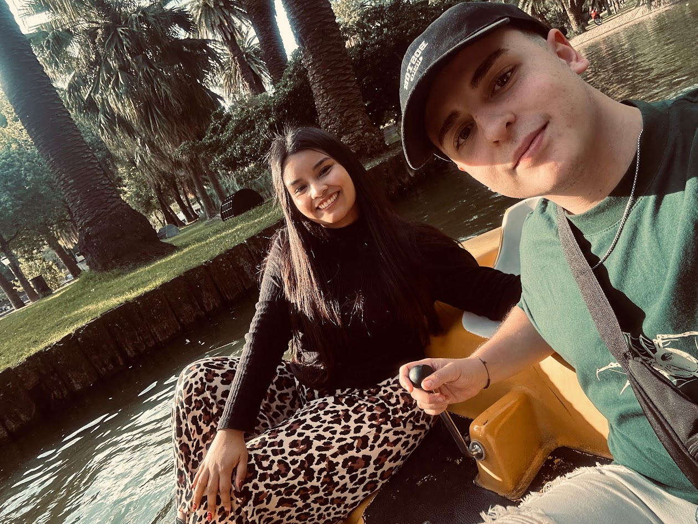
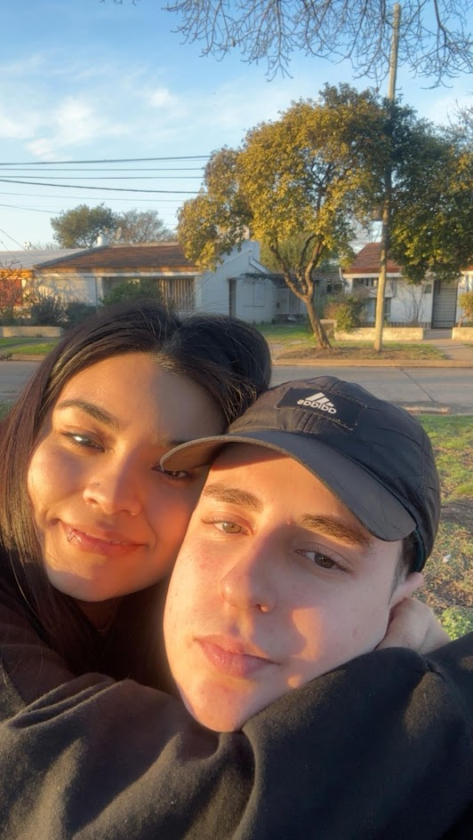
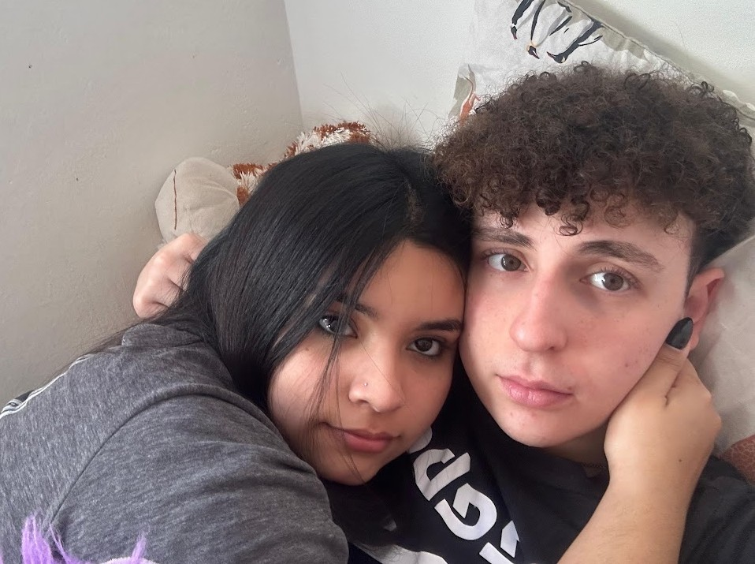

Y pensar que todo
empezó con un jueguito kjjj
Hay personas que llegan a tu vida DE LA NADA y, sin darte cuenta, terminan convirtiéndose en una parte de ella que nunca imaginaste perder.
Y después estás vos, que te convertiste en mucho más de lo que alguna vez pude imaginar.

Todo empezó acá...
Un lugar,
nosotros dos
y mil recuerdos.
Mar del Plata siempre va a tener un lugar especial para mi. No solamente por el lugar, o por burbar o por hacerte caminar 250km por dia, sino porque fui demasiado feliz y lo compartí con vos.
Si pudiera volver a vivir un momento, elegiría sin duda cualquier dia en mardel.
FELICES,
DOS AÑOS MI AMOOORRRRRR.
Algunos dias en los que me hiciste feliz.



No todo fue perfecto.
Y lo sé.
También tuvimos momentos difíciles. Sé que hubo veces en las que mis errores hicieron que confiaras menos en mí. No quiero hacer como si eso no hubiera pasado, ni encontrar excusas para justificarlo.
Sé que hay cosas que no se arreglan solamente con palabras. Quiero seguir aprendiendo, creciendo y demostrándote que puedo y quiero cuidar lo que tenemos.
Porque lo nuestro también se construye en los días en los que las cosas cuestan un poquito más.

No sé cómo explicarte
todo lo que amo de vos.
Es literalmente TODO. Tu forma de ser, tus detalles, tus abrazos, tus mensajes, tus enojos, tus risas, tu forma de estar, tus besos, como me la ch TODOOO MI AMORR
Amo tenerte en mi vida. Amo saber que, aunque estemos lejos, estés siempre del otro lado haciendo mis días sean un poquito mejores, hasta que me hinchas las bolas
Mi GORRDA HERMOSA PRECIOSA MI VIDA PRINCESA TE AMO.
Y todavía nos queda
mucho por vivir.
Gorda hermosa,
Gracias por todo lo que me diste durante este tiempo. Gracias por estar siempre, incluso cuando no podemos tenernos cerca, por acompañarme, por ayudarme a salir adelante y por quedarte siempre a mi lado a pesar de todo.
Quiero seguir apostando todo a vos, mi amor. Porque sinceramente, no me imagino mi día a día sin vos. No me imagino despertarme y no tener un buen día tuyo o un hola gordo que posta me alegra todas las mañanas que me lo decís. Son esas pequeñas cosas las que me hacen dar cuenta de lo importante que sos en mi vida.
Quiero seguir creciendo, aprendiendo y progresando a tu lado. Quiero que podamos cumplir nuestros sueños, conocer lugares, vivir experiencias y mirar algún día hacia atrás para ver todo lo que construimos juntos.
Sé que, con mucho esfuerzo y estando unidos, vamos a conseguir todo lo que nos propongamos.
No somos perfectos y sé que hubo momentos en los que me equivoqué. Pero quiero seguir demostrándote cuánto te amo y cuánto me importas vos y lo nuestro. "Creo en tu sonrisa, creo en mi si te veo hoy y me pedis que no me rinda. Sigo por vos"
Gracias por estos dos años, por cada recuerdo, cada risa, cada beso, cada abrazo y por esos momentos difíciles que también forman parte de nosotros.
Felices dos años, mi amor. Ojalá sea apenas el comienzo de todo lo que nos queda por vivir.
Te amo con toda mi vida gorda.
Jere ❤️